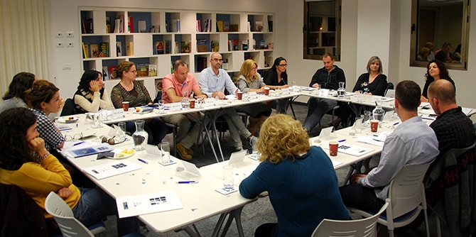

בוגרי מחזור כ"ד, שסיימו את לימודיהם בבית ספר מנדל למנהיגות חינוכית וחזרו לאחרונה למעגל העשייה, הוזמנו למפגש שעסק בסוגיות הקשורות בכניסה לתפקיד מהפרספקטיבה של ניהול ומנהיגות.
המפגש החל בסבב עדכון היכן אני בעולם? – כל אחד מהבוגרים סיפר בקצרה על התפקיד שלקח על עצמו ושיתף באתגר המרכזי שעמו הוא מתמודד.
לאחר מכן נערך דיון בהנחיית ד"ר גרניט אלמוג ברקת, מנהלת יחידת בוגרי מנדל, שעסק בסוגיות של ניהול ומנהיגות ובהבדל ביניהם. המשתתפים דנו בקצרה גם במאמרו של ג'ים קולינס מנהיגות בדרגה 5 – ניצחון הענווה ונחישות ההחלטה – מאמר הדן בייחודם של מנהלים המובילים את ארגוניהם למהפך מתפקוד טוב לתפקוד מצוין. כמו כן דנו בניהול המקיים את הקיים לעומת ניהול היוצר שינוי ועתיד חדש, ובעובדה שכל יום מספק לכל אחד מאתנו הזדמנויות לעשות "מעשה של מנהיגות" ולהשפיע על חיי הסובבים אותו. המשתתפים דנו בתחושת התכלית שיש לאדם היודע את ייעודו, וכיצד בהירות זו מכוונת אותו בבחירת התפקידים שייקח על עצמו במהלך חייו המקצועיים. בהקשר זה הוצגה התפיסה שפותחה ביחידת הבוגרים, ומבחינה בין חזון וייעוד מקצועי (Role) לבין תפקיד (Position). הבוגרים הוזמנו לתהליך בירור של החזון המקצועי שלהם בשותפות עם יחידת הבוגרים.
בהמשך עבדו הנוכחים בקבוצות ולמדו את מתודת Harvard Case Study לשיתוף עמיתים בדילמה ניהולית. מתודה זו מבוססת על ההנחה שהידע המצוי בקבוצה מאפשר חשיפה לנקודות מבט נוספות, מרחק רפלקטיבי מן הדילמה, הבנת האופן שבו הדילמה או אופן הצגתה נתפסים בעיני ה"אחר", ושימוש בחוכמת הקבוצה למציאת דרכים וגישות חדשות לדילמות.

{kind=link}